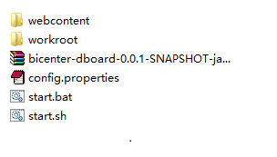

前言¶
综合看板主要用来做数据的可视化展示和布局，支持多数据源，多种图形组合布局，使用简单，操作时在页面进行拖拽即可完成看板设计。 目前支持的图形组件有HTML片段，饼图，色带仪表，关系图，直角坐标，地理坐标，表格及雷达图，运行状态图，嵌套环形图。其中，色带仪表支持仪表和色带两种图形，直角坐标支持线图，条形图和条形堆叠图，地理坐标支持散点图和动效散点图，线图和动效线图。
安装配置¶
安装¶
BICENTER-DataShow是以.zip格式发布的安装包，以jetty内置容器方式启动，运行依赖java，在部署时只需将安装包解压到一个任意目录文件夹， 在安装了java并配置好了java环境变量的的客户端直接启动，否则需要安装java，解压以后如下图:

配置¶
- BICENTER-DataShow的所有配置是通过文件config.properties配置的，主要配置以下内容：
- 访问的host和端口号（host，port），根据实际配置即可
- 前端源文件存放目录（webcontent），
- 报表文件存放目录（webroot）
- 数据源，可配置多个数据源
- 配置完成以后的文件如下：
启动¶
启动时，如果是Windows环境直接运行start.bat，如果是Linux环境运行start.sh，启动以后，浏览器访问直接访问http://[host]:[port]，访问到如下页面即安装成功，可以开始看板的设计